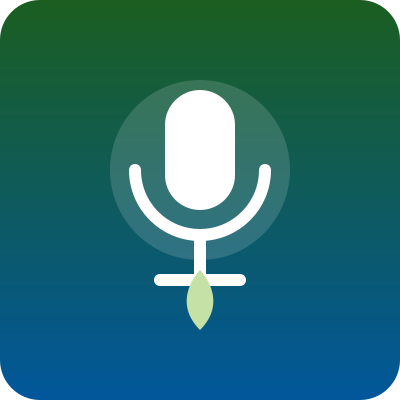

ISADORA OLIVEIRA | SUSTENTABILIDADE: UMA CONSULTORIA AMBIENTAL | PODCAST ADVENTURE | EP. #021
Duração: 37:35
Multimídia acessível
Vídeos, áudios e conteúdos interativos sobre sustentabilidade, energia limpa e inclusão. Nada é reproduzido automaticamente: você decide quando assistir ou ouvir.
Vídeo
Um resumo visual dos três pilares do portal: reciclagem, uso racional dos recursos, energia renovável e inclusão de Pessoas com Deficiência.
Áudio
Episódios em áudio sobre sustentabilidade e inclusão, ideais para ouvir no caminho da escola ou do trabalho.

Duração: 37:35
Conteúdo incorporado
Explore a região onde está localizada a Usina de Itaipu. Use os botões “+” e “−” do mapa para aproximar ou afastar e arraste para mover.
Alternativa em texto: o mapa mostra a área do rio e do reservatório da usina, com um marcador na região da barragem. Para saber mais sobre a usina, leia o estudo de caso sobre Itaipu.
Navegando pelo teclado? Pressione Tab para entrar no mapa e para sair dele.